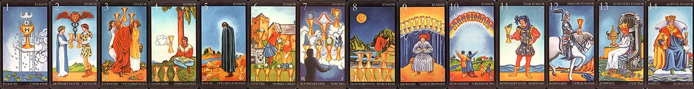

Старшие Арканы отражают общую тенденцию события, ситуации, а также личности.
Задача Младших Арканов в гадании — показать ту конкретную ситуацию или событие, качество, смысл и мораль которых выражают Старшие арканы. Младшие Арканы представляют конкретную характеристику, детали, «расшифровку».
Старшие и Младшие Арканы тесно взаимодействуют между собой и взаимно влияют друг на друга.
Чаши «отвечают» за душевные переживания: любовь, радость, печаль, фантазии, а также сферу познания, интуицию и личное мировоззрение.
С помощью Мечей мы оцениваем развитие действий, Посохи давали нам возможность предположить результат этих действий, Пантакли помогали оценить денежные обстоятельства и поступление информации, а Чаши — почувствовать настроение, эмоциональный фон, атмосферу ситуации.
В личном раскладе Мечи показывают нам, как человек будет действовать в той или иной ситуации, и характеризуют его темперамент. Посохи дают нам представление о чертах характера человека, связанных с материальной сферой, а Пантакли отражают интеллектуальные способности, коммуникабельность, сообразительность. Чаши помогут оценить душевные качества человека, шкалу внутренних ценностей.

Туз Чаш
Эта карта олицетворяет душевную чистоту и гармонию в духовной жизни. В рыцарские времена Туз червей считался символом мужества. В личном раскладе Туз Чаш указывает на такие качества, как доброжелательность, обаяние. При гадании на мероприятие эта карта предвещает мирное разрешение конфликта, весело проведенное время в приятном обществе. Туз Чаш обещает, что к каждому вашему поступку отнесутся с пониманием и простят любой промах. Он также является благоприятным предзнаменованием нового романа. Но негативные предположения других карт он может подтверждать самым коварнейшим образом, не случайно эта карта фигурирует в лермонтовском «Фаталисте» в самой зловещей роли — подтверждает предсказание о смерти.
Двойка Чаш
Этот Аркан свидетельствует о гармонии в отношениях между любящими людьми, а также равновесие и единство эмоций и разума в человеческой душе. В личном раскладе Двойка Чаш отражает такие качества, как умение понять другого человека и способность пожертвовать ради кого-то своими интересами. При гадании на мероприятие карта призывает к осторожности: много будет зависеть от вашего партнера и его порядочности.
Тройка Чаш
Тройка Чаш говорит о самодостаточности в духовной жизни и устойчивости в морально- этическом отношении. В личном раскладе эта карта означает стремление к лидерству в любом коллективе. При гадании на мероприятие Тройка Чаш предсказывает успех в публичных выступлениях, удачу в делах, связанных с участием в различных сообществах. Карта также может означать приятный вечер в дружеской компании.
Четверка Чаш
Эта карта отражает застой в духовной жизни, трудности в разрешении душевных противоречий. В личном раскладе Четверка Чаш указывает на такие качества характера, как замкнутость, неумение выразить свои чувства, разобраться в себе и своих стремлениях. Если эта карта выпадает при гадании на ситуацию, вам лучше отказаться от участия в намеченном деле. Часто Четверка Чаш предсказывает обстоятельства, в которых вам придется решать, какой стороне из нескольких конфликтующих отдать предпочтение.
Пятерка Чаш
Пятерка Чаш отражает эмоциональную нестабильность, обостренные чувства, состояние духовного поиска, неопределенности в системе жизненных ценностей. В личном раскладе эта карта характеризует человека как излишне эмоционального, быстро загорающегося, но и быстро падающего духом. При гадании на ситуацию Пятерка Чаш часто предсказывает разочарование в любви, обманутые надежды в других делах.
Шестерка Чаш
Эта карта символизирует гармонию в психоэмоциональной и духовной жизни. Отличительной особенностью человека, имеющего в личном раскладе Шестерку Чаш, является умение видеть и ценить красоту во всех ее проявлениях. Такие люди от природы наделены удивительным чувством такта, любезностью, умением вести себя в любом обществе. В раскладе на ситуацию карта предсказывает мирное решение споров, особенно между друзьями и родственниками, а также удачу в любовных делах и просто хорошее настроение.
Семерка Чаш
Этот Аркан отражает фантазии, мечты и является символом всего созданного силой человеческого воображения. В личном раскладе Семерка Чаш указывает на такие черты, как одухотворенность, религиозность, мечтательность, в крайних проявлениях — полный отрыв от действительности. Эта карта, как правило, выпадает в личных раскладах творческих, душевно тонких людей, они часто бывают «не от мира сего», их отрицательными чертами являются рассеянность, недисциплинированность. При гадании на мероприятие Семерка Чаш говорит о том, что следует соблюдать осторожность во всех делах, особенно финансовых: вполне возможно, что перспективы, которые казались вам заманчивыми — миф, иллюзия. В гадании на личные отношения карта предсказывает романтическую, возвышенную привязанность.
Восьмерка Чаш
Восьмерка Чаш отражает эмоциональную сдержанность, аскетизм и строгость принципов в духовной жизни. В личном раскладе означает холодность, высокомерие, повышенные требования к партнеру и к себе самому, эгоизм. В раскладе на мероприятие толкование этой карты может быть двойственно, так как она говорит об эмоциональной отстраненности, холодности участников данной ситуации в отношении друг друга. Восьмерка Чаш — благоприятный знак, если вы гадаете на деловое предприятие: возможно, вам удастся расширить сферу своего влияния. А при гадании на любовные дела эта карта предсказывает охлаждение в отношениях.
Девятка Чаш
Эта карта отражает готовность человека к переходу на более высокий духовный уровень, переосмысление духовных ценностей. В личном раскладе эта карта указывает на постоянную внутреннюю борьбу, сомнения и противоречия, которые скрываются под вполне спокойной и благополучной внешностью. Такие люди склонны обвинять себя во всех мировых несчастьях, тревожны, мнительны. Если в личном раскладе Девятка Чаш выпадет вместе со Старшим Арканом Луна — необходимо обратиться к психоаналитику, так как этот человек уже не способен самостоятельно выпутаться из внутренних проблем. Карта также отражает такие качества, как нерешительность в поступках, стремление откладывать неприятные дела и накапливать их. В раскладе на ситуацию лучше ориентироваться на показания остальных карт, если они благоприятны — дерзайте! При гадании на личные отношения Девятка Чаш предупреждает: не тяните с принятием важного для вас и обоих решения и не мучайте сво-% его избранника бесконечными сомнениями.
Десятка Чаш
Десятка Чаш отражает полноту духовноэмоциональной жизни человека, умение воспринимать и переживать все разнообразие впечатлений, получаемых от мира. В личном раскладе характеризует человека как жизнерадостного, обаятельного и удачливого в любви. В раскладе на мероприятие карта предсказывает обилие самых разных событий в духовной жизни, период обостренного восприятия красоты, произведений искусства. В любви Десятка Чаш предрекает счастливые времена, когда партнеры несут друг другу счастье и множество различных приятных переживаний.
Паж Чаш
Эта карта символизирует вступление человека на новый духовный путь или зарождение новой любви. В личном раскладе означает легкомыслие в дюбовных делах, веселый характер, неумение и нежелание разбираться и в чужой, и в своей душе, но положительной чертой такого человека является восприимчивость ко всему непознанному, например, к религиозным учениям, авангардным произведениям искусства. Для мужчин эта карта часто предостерегает от опасности стать рабом любви к женщине, особенно это значение проявляется со Старшим Арканом Сила. При гадании на мероприятие карта предсказывает удачу в любых новых делах. При гадании на личные отношения — указывает на легковесность этой связи.
Рыцарь Чаш
Рыцарь Чаш отражает духовный поиск, а также поиск идеала в любви. В личном раскладе Рыцарь Чаш указывает на такие качества, как постоянная душевная неудовлетворенность, стремление к поискам счастья, мечты о «дальних берегах и прекрасных принцессах». Эта карта предлагает оглядеться вокруг и посмотреть: может быть, счастье совсем близко, просто вы его не видите? В раскладе на мероприятие Рыцарь Чаш предсказывает успех в том случае, если вы не будете ловить «журавля в небе» и ждать слишком много от ситуации. В гадании на личные отношения карта говорит о том, что события развиваются в лучшем для вас направлении, хоть это может быть и незаметно на первый взгляд.
Королева Чаш
Символизирует самовыражение женщины в духовно-эмоциональной сфере. Предсказывает профессиональные успехи дамам, работающим в искусстве. В личном раскладе Королева Чаш указывает на душевную тонкость, восприимчивость, эмоциональность, самоотверженность в любви. Королева Чаш, как «эолова арфа», реагирует даже на легкое прикосновение, это легко увлекающаяся натура. Если карта выпадает в личном раскладе для мужчины, она означает мягкость, податливость характера, ранимость, обидчивость. Особенно ярко качества Королевы Чаш проявляются со Старшими Арканами: со Звездой — возвышенность, романтизм, склонность к платонической любви, с Императрицей — самоотверженное материнство, с Миром — религиозная одухотворенность, целомудрие. При гадании на мероприятие карта обычно указывает на участие в нем какой- нибудь влюбленной женщины или предвещает, что все ваши предложения и идеи будут с радостью приняты, обещает атмосферу интимности в общении.
Король Чаш
Символ духовной силы, внутреннего благородства. Прототип Короля Чаш — славный король Артур из легенд о рыцарях Круглого Стола, романтичный, бесстрашный, безупречный в вопросах чести, верящий в сказочных драконов и прекрасных принцесс. В личном раскладе карта указывает на самостоятельное мировоззрение, доброжелательность, способность и желание поддерживать, оберегать, спасать. К такому человеку быстро тянутся друзья, ему подражает молодежь, любят женщины, уважают мужчины, старшие говорят про него: «Такие чудесные люди были только в старину!» Король Чаш — романтик и эстет. Эта карта свидетельствует также об артистизме, художественных, музыкальных способностях. Со Старшим Арканом Великий Иерофант Король Чаш приобретает значение духовного учителя, человека, определяющего мировоззрение и мораль для многих людей, с Императором — склонность к меценатству. При гадании на мероприятие предсказывает спокойное, доброжелательное отношение, атмосферу уважения и благородства в общении. Со Старшим Арканом Луна — возможно, вам попытаются изящно «запудрить мозги».